What the fuck is the sim-to-real gap?
Over the past month we found 20 bugs in open-source physics engines. Most never raise an error. They quietly corrupt what your robot learns in simulation, and show up later as the sim-to-real gap: a robot that works in sim and fails on the real thing.
Large-scale training makes it worse. A policy trains on thousands of copies of a world, running side by side on GPUs for billions of steps. That is where these bugs live: they appear only when many worlds run at once, in poses too rare for any unit test, or in thin and soft things. We found them in Newton, MuJoCo Warp and MuJoCo, and reported all of them upstream. Here are the three that matter most for training at scale, then the rest in one picture.
1. More worlds, different physics#
A ten-cube tower stands on its own. Run it in thousands of worlds at once, and most of the copies fall.

MuJoCo Warp, CG solver: 0 of 16 copies fall, then 92 of 256, 882 of 1,024 and 4,031 of 4,096.
Worlds also leak into each other. In MuJoCo Warp, every world wrote its bounding box to one shared slot, and a ball fell through its own table.

In Newton’s MPM solver, changing the other worlds moved world 0 by up to 0.1 mm. And at 4,096 worlds, Newton’s mesh contact buffer filled up without a warning, and pegs sank 28.9 mm into a 20 mm hole.
What it does to training: at 4,096 worlds the policy learns physics you never see when you debug in one.
2. Resting objects get launched#
In a two-arm task, a 15 mm block resting on a 12.7 mm board was fired straight down through it at several metres per second.

MuJoCo Warp’s general collision routine returned the contact upside down and 27.7 mm deep: both thicknesses added. Its own box-box routine and MuJoCo both say 0.009 mm, pointing up. Only a sliver of heights triggers it:

130 of 2,001 heights, 2 nm apart, all inside 0.35 µm.
What it does to training: a unit test never lands in that band. A training run visits billions of poses, so it does, and the policy learns that blocks sometimes explode. We reported it as #1883. Two open PRs from other contributors, #1845 and #1866, together remove every flip on our scan and on 8,000 random poses.
3. Cables and cloth behave like no real material#
Stiff cables sag 40 % too far (Newton, VBD solver1). VBD corrects one body at a time, so a correction crawls one segment per sweep. Our #4795 solves each rod at once and lands within 1–2 % of the exact shape.

A cloth pile sinks through the floor (Newton, VBD with self-contact). 271 of 1,681 particles end up below the ground, the lowest 74 mm down. #5143.
What it does to training: a policy that learns to route a cable or fold a towel learns a material that doesn’t exist.
The rest#

If you train at scale, check this#
- Run one scene at 1 and at 4,096 worlds. The physics must match.
- Scan awkward poses: thin things resting on each other, shallow overlaps, edges across edges.
- Check momentum: push a free object with a known impulse. Its momentum must change by exactly that.
- Size contact buffers yourself and check them for overflow every step.
- Test soft things at your real mesh size.
- In MuJoCo Warp, route box pairs to the box-box routine (turn
NATIVECCDoff) until #1845 and #1866 land.
The ledger#
| Bug | Engine | Report / fix |
|---|---|---|
| Round shapes touch 0.1 mm early | Newton | #4790 / #4791 ✓ |
| Held cloth drops (deterministic mode) | Newton | #5145 / #5146 ✓ |
| Stiff cables sag 40 % | Newton | #4794 / #4795 |
| Fine cloth won’t bend | Newton | #5130 / #5131 |
| Bending weakens with mesh size | Newton | #5140 |
| Cloth pile sinks through the floor | Newton | #5143 |
| Pushed cloth gains 3.2× the momentum | Newton | #5129 |
| Fluid flows 15 % slow | Newton | #5206 |
| MPM worlds move each other | Newton | #5207 |
| Worlds share one bounding box | MJ Warp | #1795 / #1800* |
| 16.5 µm overlap read as 190 mm | MJ Warp | #1796 |
| Resting block launched | MJ Warp | #1883 / #1845 + #1866* |
| One contact on a line | MuJoCo | #3755 |
✓ merged. * by other contributors. MJ Warp is MuJoCo Warp. Every report links a script that reproduces it.
What’s next#
These bugs share one cause. The engines are tuned for scenes where a millimetre doesn’t matter, nobody reruns a world, and speed is measured on falling boxes. That is the right tuning for most of their users, and the wrong one for robot hands. So we are building Alloy, a physics engine for robot hands, around the checks above. It launches soon. Why we are building it, in plain words: Robots need their own wind tunnel.
References#
-
Anka He Chen, Ziheng Liu, Yin Yang, Cem Yuksel. “Vertex Block Descent.” ACM Transactions on Graphics (SIGGRAPH), 2024. arXiv:2403.06321. ↩
Citation#
Please cite this work as:
@article{gupta2026simtoreal,
author = {Pranay Gupta},
title = {{What the fuck is the sim-to-real gap?}},
journal = {codnay.github.io},
year = {2026},
month = {November},
url = {https://codnay.github.io/blog/sim-to-real-gap/},
}